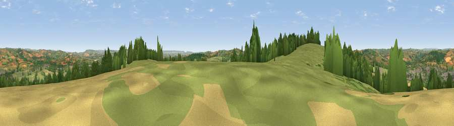

Viewpoint near Tiverton
#11017 in England · top 13% of its area beats it · near TivertonThe view, rendered

A 360° render of this exact spot computed from the terrain model, tree cover and land cover — summer colours, afternoon light, calibrated against photographs of famous viewpoints. Real trees, hedges and buildings will differ in detail.
The panorama
Grey silhouette: terrain skyline in each direction (720 bearings, Earth curvature and refraction included). Dashed green: skyline with trees (+15 m) and buildings (+8 m) as obstacles. Blue strip: how far the ground is visible on each bearing.
Where the view opens
Wedge length = distance to the farthest visible ground on that bearing (vegetation-aware). Rings at 10, 25 and 50 km.
What fills the view
53% grassland · 24% woodland · 16% cropland · 6% built-up
Angular shares of the visible panorama (visual magnitude), not map area. Landscape diversity 0.50 (0–1 Shannon).
Key numbers
More beautiful places nearby
The staircase of upgrades: each row has a higher view potential than everything closer. Driving times are estimates from straight-line distance, calibrated against real road routing — check an actual route before setting out.
| Place | Direction | Drive | Score |
|---|---|---|---|
| Bingwell Hill | WSW · 1 km | ~2 min | 65.7 |
| Viewpoint near Cadeleigh | WSW · 4 km | ~9 min | 66.7 |
| Viewpoint near Butterleigh | S · 5 km | ~11 min | 68.1 |
| Viewpoint near Silverton | S · 6 km | ~13 min | 73.9 |
| Viewpoint near Bradninch | S · 7 km | ~14 min | 77.7 |
| Raddon Hills | SW · 11 km | ~21 min | 78.2 |
| Viewpoint near Stockleigh Pomeroy | SW · 11 km | ~21 min | 78.9 |
| Viewpoint near Whitestone | SSW · 20 km | ~33 min | 79.8 |
50.89134, -3.46261 · source: screening · position refined by local search. Computed location — check access rights before visiting.